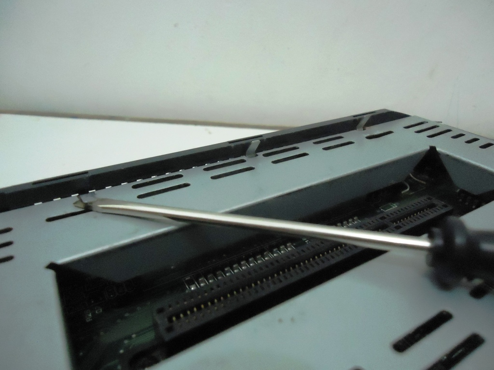

Conheça o Jaguar!
 Por Gigacom - Durante a mais importante mudança de geração de video games (da 16 para 32bits), a Atari reaparece e tenta retomar sua gloria lançando um novo e poderoso console, que segundo ela seria superior aos da concorrência e de quebra o mais barato do mercado, seu nome era Jaguar.
Por Gigacom - Durante a mais importante mudança de geração de video games (da 16 para 32bits), a Atari reaparece e tenta retomar sua gloria lançando um novo e poderoso console, que segundo ela seria superior aos da concorrência e de quebra o mais barato do mercado, seu nome era Jaguar.
___________________________________________________________________________
Bem lá no inicio da historia da Atari, quando ela entrou no mercado com o Atari 2600, essa empresa fez historia e ficou conhecida no mundo todo. Ela foi a responsável por popularizar o video game caseiro, e praticamente criou uma nova e lucrativa industria. Reinou absoluta durante uns bons anos, mas acabou se perdendo ainda mais depois que a empresa foi comprada pela Time Warner. Quando a Atari afundou, levou consigo toda a industria de video games para o túmulo, virou chacota e o foco do publico mudou para os computadores pessoais e suas multi-funcionalidades. Felizmente a Nintendo ressucitou os video games caseiros com o NES e daí nunca mais o video game sofreu alguma ameaça de morrer novamente.
Desde o Atari 2600 lançado lá pelos finados anos 70, a Atari nunca mais emplacou qualquer video game que fosse. Ela bem que tentou nos anos 80 lançando o Atari 5200 e o 7800, mas esses foram aniquilados sumariamente pelo matador de concorrentes daquela década (o NES, quem mais?). Desde o Atari 2600, o nome da empresa era motivo de piada e ninguem mais levava a sério qualquer coisa que viesse dela.
No inicio dos anos 90 a Atari se fundiu a Flare Technology, que na época estava trabalhando em um console mais capaz que o Mega Drive e o Super Nes. As duas empresas passaram a desenvolver dois projetos de video games, o primeiro de 32 bits com o codinome Panther e o segundo de 64 bits chamado Jaguar. Como o segundo projeto mostrou maior capacidade e potencial de mercado que o Panther, já em 93 a Atari declarou oficialmente estar voltando ao mercado de consoles domésticos, e no finalzinho daquele ano passou a comercializar nas lojas o Jaguar, o primeiro console de 64 bits do mundo! Mas...
O Jaguar era de fato um sistema de 64 bits? Não mesmo... o processador central era um Morotola M68000 (igualzinho ao do Mega Drive), e o processador gráfico (vagabundo pácarai, vale dizer) trabalhava a 32 bits. Mas o sistema do Jaguar possui controladores de dados entre a CPU e a GPU trabalhando a 64 bits, o que supostamente resultaria num desempenho de tratamento de dados em 64bits, só que isso não significa taaaaanto ganho de desempenho assim em um sistema. Trocando em miúdos... o Jaguar é um Mega Drive com capacidade pior que o 32X mas que acredita ser um Nintendo 64 e se diz melhor que o 3DO. Confuso? Nem tanto... ainda mais depois de se ver a campanha publicitária que a Atari lançou para promover o Jaguar.
Durante os poucos anos de vida do gatinho, a Atari chegou ao cumulo de dizer que o Jaguar era um sistema de 64 bits, muito mais poderoso que o Saturn e um pouquinho pior que o Playstation. A verdade é que o Saturn é umas 2 vezes melhor que o Playstation, e o Jaguar poderia ser comparado somente ao 3DO, e isso com a balança pesando a favor desse outro console. De todo modo, as propagandas da Atari eram agressivas, não poupavam palavras nem menções aos concorrentes, e isso até combinava com o estilão e o nome do console.
Já em 1994 o Jaguar ficou meio que esquecido, ninguem levava a sério o console da Atari. Ele vendeu muito bem no fim de 93 e em Janeiro e Fevereiro de 94, periodo este bem escolhido pela empresa pois o console foi bastante pedido ao Papai Noel e era a novidade das férias da molecada. Mas quando o povo viu que o Jaguar não iria muito pra frente, e que os 64 bits tão poderosos e alardeado pela Atari chegava nem perto do 3DO, o console logo acabou sendo esquecido e as pessoas só arriscavam a comprá-lo pelo precinho camarada, que era mais barato que um Genesis!
E como sempre digo, a capacidade de um console não significa nada se ele não tiver jogos bons. E o Jaguar... bem, acho que ele tem... deixe-me contar... uns 5 jogos legais que aproveitavam mais ou menos bem o hardware do console, o resto dos 90 e tantos lançados para ele são de gosto duvidoso, mas até que aqueles jogos tambem lançados para os 16 bits não ficaram ruim (Zool e Pitfal por exemplo). O que pouco foi divulgado, é que o console possui uma falha grave em seu sistema que impedia a execução de diversos comandos da CPU ao tentar acessar alguns dados na memória. Havia meios de se contonar isso, mas era bem complicado de se fazer toda vez que se produzia um jogo para o console. O kit de desenvolvimento para o Jaguar foi lançado muito tardiamente, com ferramentas de produção ruins e documentação escassa. Tudo isso afastou os desenvolvedores de jogos, e os games lançados eram pouco trabalhados e interessantes, com ecessão de apenas um punhado de jogos bem produzidos. Tudo isso contribuiu para encalhar o Jaguar, e a Atari se viu com o fracasso novamente batendo as portas.
No final do fim, a Atari lançou o Jaguar CD, um acessório que possibilitava ao Jaguar rodar games em CD e transformava-o num pinico de boneca. É sério, o bicho fica fei a beça com aquele troço. O Jaguar CD não adicionava nenhuma capacidade extra ao console (só uma bateriazinha para salvar o progresso de jogos). Foram poucas as unidades do Jaguar CD produzidas e vendidas no mercado, e a maioria dessas unidades ainda inteiras se encontram encostadas junto com um monte de tralhas nas garagens das residências americanas, ou nas prateleiras dos colecionadores. Não importando o destino dessas coisas, o fato é que são praticamente inutéis. Há poucos jogos para o Jaguar CD, sendo que o melhorzinho é apenas o Myst tambem lançado em versões melhores para um punhado de outros video games.
A Atari não declarou oficialmente o fim da vida do Jaguar, ela continuou mentindo dizendo que continuaria a desenvolver fabulosos jogos para a plataforma, e que iria lançar com o tempo novos acessórios que revolucionariam o modo de jogar. Os fãs naturalmente acreditaram, até que um dia a Hasbro, em uma disputa judicial, levou da Atari os direitos sobre o Jaguar. Daí a Hasbro fez o que tinha mais de sensato a se fazer: liberou a plataforma para a fabricação de jogos caseiros, os famosos homebrews.
Essa historinha é até bem conhecida por aí (um ou outro detalhe que acrecentei aqui é que não é tão divulgado). Mas só aqui no Giga Old Games você conhece mais detalhes da maquina. Peguei um emprestado de um amigo, e resolvi abrir para mostrar para vocês alguns detalhes interessantes desse console. Vejam:
Clique nas imagens para ampliar.
Estéticamente, o Jaguar é simples e não possui nada muito enfeitado. O tamanho dele é semelhante ao do Sega Saturn, mas é bem baixinho, tanto quando um Mega Drive 3. Abaixo, apenas 4 parafusos fecham o console, a entrada de cartuchos possui uma fenda que impede o encaixe errado do cartucho, e a parte de trás do encaixe é arredondada.
Abrindo o console, se dá logo de cara com duas chpas metálicas que literalmente prende a placa mãe dentro delas. As chapas são frisadas, permitindo o arrefecimento e dissipação de calor que o hardware possa produzir, além de proteger o hardware de interferências eletromagnéticas externas.

Para abrir as chapas, é preciso levantar várias travinhas da propria chapa que estão em todos os lados. Dá um trabalhinho, e essas chapas soltas são um convite para se ganhar cortes nos dedos ou um furo no pé (se você deixa-las jogadas no chão é claro).
A placa mãe do Jaguar é relativamente simples, mas possui uma penca de componentes:
Clique nas imagens para ampliar.
A saída padrão de video e audio do console é RF. Isso se deve ao fato de o console ter sido construído para ser o mais barato possivel. Porém é facil instalar uma saída A/V nele. Tá vendo aquela saída ali na parte superior da placa mãe? Pois é, é ali que se conecta o expansor oficial da Atari para uma saída A/V, e é lá onde se dá para colocar uma gambiarrazinha tambem hehe.
Basicamente, é isso amigos. O Jaguar de um modo geral, não era um bom console, recebeu apenas alguns poucos jogos que valem a pena conhecer, vendeu relativamente bem num primeiro momento, mas hoje virou item de coleção. Jogar nele não é nenhuma experiência do outro mundo, na verdade, não é nada de mais. E como disse, é um item de colecionador, e não algo para se ter e passar dias jogando...
Acesse o Trombone e comente sobre essa matéria!


{kind=link}
{kind=link}
{kind=link}
{kind=link}
{kind=link}
{kind=link}

Que tal acessar a sua conta do banco, com todo o conforto e comodidade de sua casa? Para isso, o pai de familia iria precisar do Telebradesco, um cartucho especial fabricado com exclusividade pela Tec Toy para o Bradesco; e tambem iria precisar pegar emprestado o Mega Drive do muleque para acessar...